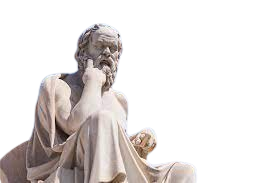
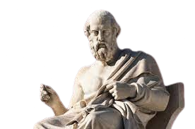

¿que es Realmente la filosfia?
-
La filosofía es una disciplina intelectual que se ocupa de explorar y analizar preguntas
fundamentales
acerca de la existencia, el conocimiento, la realidad, la moral, la mente y el lenguaje. A través
del
razonamiento lógico y la reflexión crítica, los filósofos buscan comprender la naturaleza del mundo
y
del
ser humano. La filosofía aborda cuestiones abstractas y conceptuales, buscando encontrar principios
universales y fundamentos para la comprensión del conocimiento y la conducta humana.
¿donde se origino?
-
La filosofía tiene sus raíces en la antigua Grecia, alrededor del siglo VI a.C. Su origen se atribuye a
varios pensadores presocráticos que se preocupaban por comprender la naturaleza del mundo y explicar el
orden subyacente en la realidad. Tales figuras incluyen a Tales de Mileto, Anaximandro y Heráclito.
Los primeros filósofos griegos se dedicaban a la reflexión y la investigación sobre cuestiones
fundamentales acerca de la existencia, la realidad, el conocimiento, la moral y otros temas
relacionados. Tales pensadores a menudo eran conocidos como "filósofos presocráticos", ya que
precedieron a Sócrates, uno de los filósofos más influyentes de la antigüedad.
Sócrates, Platón y Aristóteles son a menudo considerados los tres grandes filósofos de la antigua
Grecia. Cada uno de ellos contribuyó de manera significativa al desarrollo de la filosofía occidental. A
lo largo de los siglos, la filosofía ha evolucionado y se ha diversificado en diversas corrientes y
tradiciones en todo el mundo, pero su origen histórico se encuentra en la Grecia antigua.
Sin embargo, es comúnmente aceptado que el término "filosofía" fue acuñado por el filósofo griego
Pitágoras
en el siglo V a.C. La palabra proviene del griego antiguo y significa "amor por la sabiduría" (de
"philos",
que significa amor, y "sophia", que significa sabiduría).
¿quienes fueron Los Principales contribuyentes?
-
Socrates (470 a.C-399 a.C)
Juicio y Muerte: Sócrates fue juzgado y condenado a muerte en el año 399 a.C. Fue acusado de
corromper a la juventud y de no reconocer a los dioses de la ciudad. En lugar de retractarse de sus
enseñanzas, eligió beber veneno (cicuta) como castigo, un evento que se relata en obras como "La
Apología" de Platón.
El Método Socrático: Sócrates no enseñaba en el sentido tradicional, proporcionando
respuestas directas a sus discípulos. En cambio, empleaba el método socrático, que consistía en
hacer preguntas para estimular el pensamiento crítico y la reflexión en sus interlocutores. Este
método se conoce como la "mayéutica", un proceso de pregunta y respuesta destinado a ayudar a las
personas a descubrir la verdad por sí mismas.
La Ironía Socrática: Sócrates a menudo adoptaba una actitud de ignorancia simulada, haciendo
preguntas ingenuas para exponer la ignorancia o contradicciones en las respuestas de los demás. Esta
ironía socrática tenía como objetivo llevar a sus interlocutores a cuestionar sus propias creencias
y a buscar una comprensión más profunda.

-
Platón (Aristocles) (c. 428-348 a.C.)
Diálogos Filosóficos: Platón escribió una serie de diálogos filosóficos, en los cuales Sócrates
(o a
veces
otros personajes) discute diversos temas con otros pensadores. Estos diálogos exploran cuestiones
fundamentales sobre la ética, la epistemología, la metafísica y la política.
Teoría de las Ideas o Formas: Uno de los conceptos más influyentes de Platón es la teoría de las
Ideas
(también conocida como teoría de las Formas). Sostenía que las cosas en el mundo sensible son
simplemente
copias imperfectas de formas ideales perfectas que existen en un mundo no material. Por ejemplo, la idea
de
"justicia" sería una entidad abstracta e ideal, mientras que las manifestaciones de justicia en el mundo
real serían copias imperfectas de esta forma ideal.
Teoría del Conocimiento y la Reminiscencia: Platón exploró la naturaleza del conocimiento en sus
diálogos.
Introdujo la idea de que el conocimiento auténtico es recuerdo (anámnesis) de las formas que el alma
conoce
antes de encarnarse en el cuerpo. Sostenía que las experiencias en el mundo sensible actúan como
recordatorios de lo que el alma ya sabe.

-
Aristóteles (384-322 a.C.)
Ética y Virtud: Aristóteles formuló una ética basada en la virtud y la excelencia moral. En su
obra
"Ética a Nicómaco", expuso la ética de la virtud, argumentando que la felicidad se alcanza a través de
la
práctica de virtudes moderadas.
Biología y Ciencias Naturales: Aristóteles realizó importantes contribuciones a la biología,
clasificando y estudiando animales y plantas. Su obra "Historia de los animales" es un precursor
temprano de
la zoología.
Epistemología: Aunque su enfoque era más empírico que el de su maestro Platón, Aristóteles
también
contribuyó a la epistemología, explorando la naturaleza del conocimiento y la experiencia.

Conclusiones
-
La filosofía es una disciplina que ha desempeñado un papel fundamental en la búsqueda del conocimiento y
la comprensión de la existencia humana y del mundo que nos rodea. A lo largo de la historia, los
filósofos han explorado cuestiones fundamentales sobre la realidad, la mente, la ética, la política y la
metafísica, entre otros temas. Algunas conclusiones generales sobre la filosofía incluyen:
1.Búsqueda de la Sabiduría: El término "filosofía" se traduce literalmente como "amor a la
sabiduría".
La
filosofía se centra en la búsqueda del conocimiento y la comprensión profunda de las cuestiones
fundamentales de la existencia.
2.
Diversidad de Enfoques: A lo largo de la historia, la filosofía ha adoptado una variedad de enfoques y
perspectivas. Desde la filosofía antigua en Grecia hasta las diversas corrientes filosóficas en
diferentes culturas y períodos, ha habido una rica diversidad de pensamiento filosófico.
3.
Métodos de Investigación y Reflexión: La filosofía utiliza métodos de investigación y reflexión que
van desde la lógica y el razonamiento deductivo hasta el análisis crítico y el examen profundo de
conceptos fundamentales. El método socrático, por ejemplo, destaca la importancia del diálogo y la
pregunta para llegar a la verdad.
4. Influencia en Otras Disciplinas: La filosofía ha influido en numerosas disciplinas, incluyendo
la ciencia, la ética, la política, la psicología y la religión. Muchos avances en estas áreas han sido
moldeados por el pensamiento filosófico.
5. Desafío Permanente: La filosofía plantea preguntas desafiantes y a menudo no tiene respuestas
definitivas. En lugar de ofrecer respuestas concluyentes, la filosofía tiende a estimular la reflexión
crítica y a fomentar una actitud de búsqueda constante de la verdad.